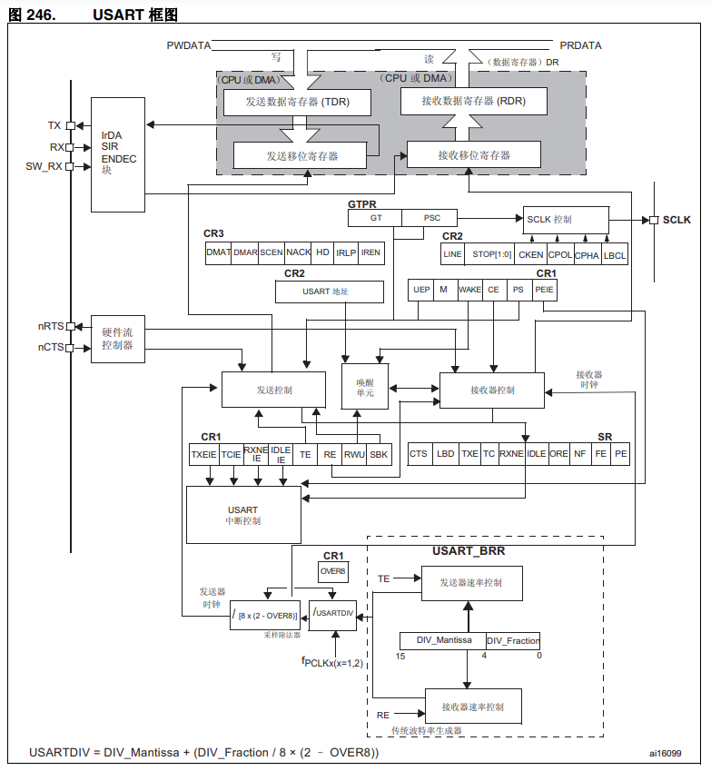
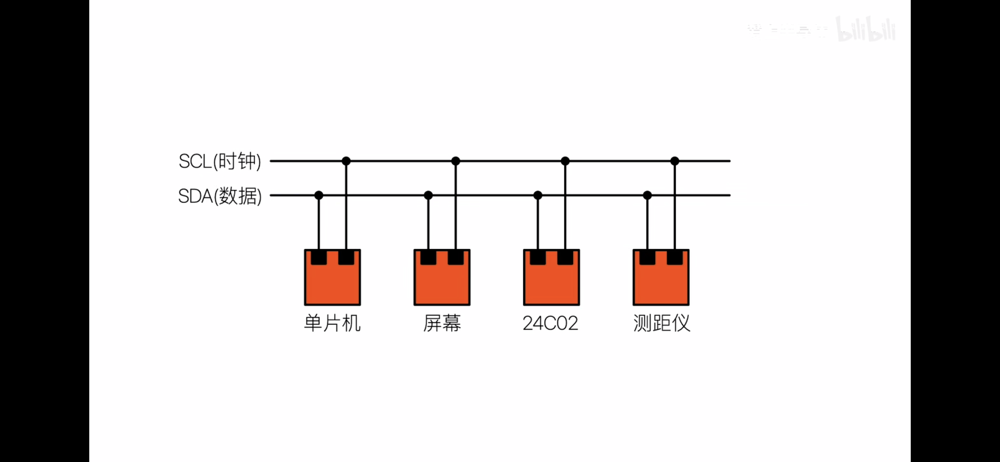
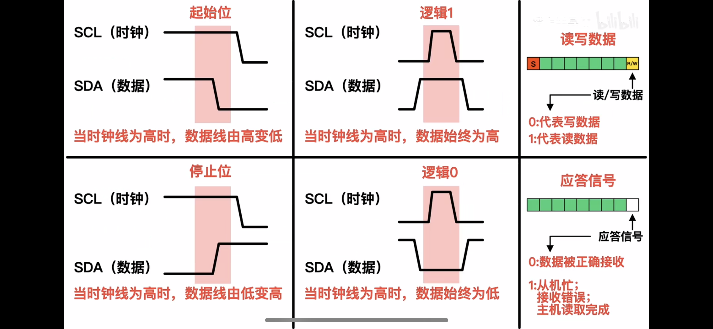
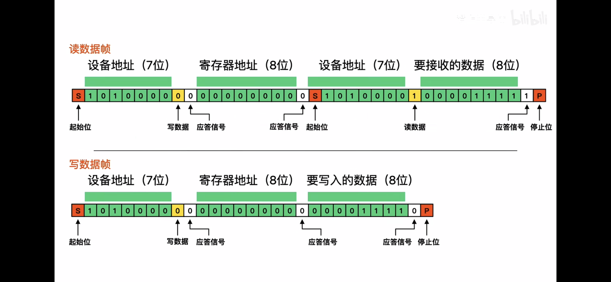
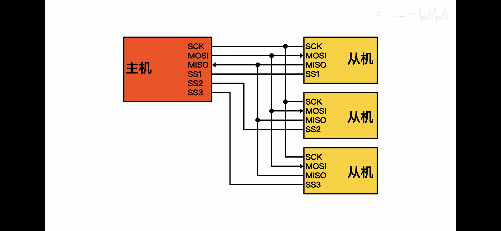
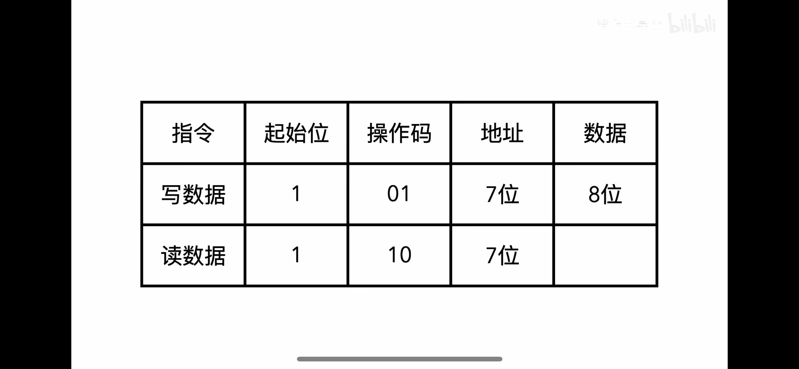
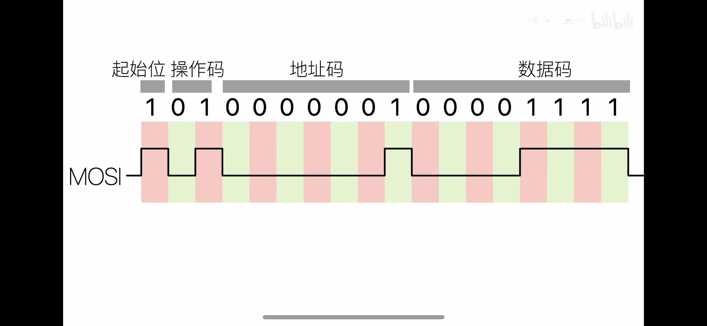
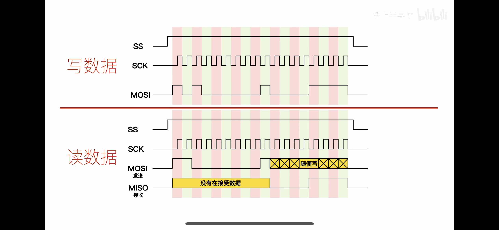

硬件通讯协议
常见硬件通讯协议
一些基础概念
串行通信协议
同步通信(asynchronous data communication)：以数据块为单位传输，收发方必须使用同一时钟源。
异步通信(synchronous data communication)：以字符为单位传输，两个字符之间传输的时间间隔不固定的，但同个字符内部的时间间隔是固定的，收发方无需使用同一时钟源，只要时钟信号的频率相同即可。
异步通信通过传送字符内的起始位来进行同步，而同步通信采用共用外部时钟来进行同步。
通俗点来说：同步通信就是舔狗发微信找女神，对方一直不回复，但舔狗一直在那等待回复；异步通信就是一个比较聪明点的舔狗发微信找女神，对方一直不回复，但舔狗不在那一直等待回复，选择了干其他事情。
数据传送方式
单工：只有一个固定方向进行传送数据。
半双工：双方都可以进行传送数据，但不能同时传送和接收数据，即只存在一方传送，一方接收。
全双工：双方都可以进行发送数据，并且可以同时传送和接收数据。
常见电平标准
TTL 电平：全双工，1：2.4V~5V，0：0.
| 电平类型 | 通信方式 | 逻辑1 | 逻辑0 |
|---|---|---|---|
| TTL 电平 | 全双工 | 2.4V~5V | 0V~0.5V |
| COMS 电平 | |||
| RS232 | 全双工 | -15V~-5V | +3V~+15V |
| RS485 | 半双工 | +2V~+6V | -6V~-2V |
串口参数
- 波特率：串口通信的速率 单位一般为 bit/s，一秒传送多少位，波特率的倒数就是传送 1 位的时间。
- 起始位：标志一个数据帧的开始，固定为低电平。
- 数据位：数据帧的有效载荷，1 为高电平，0 为低电平，低位先行即一组数据是低位先入。
- 检验位：用于数据验证，根据数据位计算得来。
- 停止位：用于数据帧间隔，固定为高电平
TX 引脚与 GND 进行比较输出定时翻转的高低电平，RX 引脚定时读取引脚的高低电平，每个字节的数据加上起始位、停止位、可选的检验位封装位数据帧，依次输出在 TX 引脚，另一端 RX 引脚依次接收。
硬件流控制：多接了根线连接发送端和接收端，只有当接收端准备好了告诉发送端，发送端才开始发送数据。防止发送端数据太快导致接收端数据丢失或被覆盖。
常见的硬件通讯协议
UART
UART——通用异步收发传输器，工作原理是将传输数据的每个字符一位接一位地传输。只要 3 根线（TX、RX、GND）就可以实现双向通信，一根线发送数据的同时用另一根线接收数据。
由于 UART 是异步通信，因此对于两个使用 UART 串口通信的端口，下面参数必须匹配，否则通信出错。
通信数据格式
-
起始位：表示数据传输的开始，电平逻辑为“0” ，位数为 1 位。
-
数据位：可以是 5~8 位的数据，先发低位，再发高位，一般取值为 8，因为一个 ASCII 字符值为 8 位。
-
奇偶校验位：用于接收方对接收到的数据进行校验，“1”的位数为偶数(偶校验) 或奇数(奇校验)；mark parity：校验位始终为 1；space parity：校验位始终为 0；以此来校验数据传送的正确性，使用时不需要此位也可以。
-
停止位：表示一帧数据的结束，电平逻辑为“1”，位数可以是 1/1.5/2 位。
-
波特率：串口通信时的速率，它用单位时间内传输的二进制代码的有效位(bit) 数来表示，其单位为每秒比特数 bit/s(bps)。常见的波特率值有 4800、9600、115200 等，数值越大数据传输的越快，波特率为 115200 表示每秒钟传输 115200 位数据。
连接方式为 TX——RX，RX——TX，GND——GND。
- UART 只是对信号的时序进行了定义，而未定义接口的电气特性；
- UART 通信时一般直接使用处理器使用的电平，即 TTL 电平，但不同的处理器使用的电平存在差异，所以不同的处理器使用 UART 通信时一般不能直接相连；
- UART 没有规定不同器件连接时连接器的标准，所以不同器件之间通过 UART 通信时连接不方便。
- UART 一般直接使用 TTL 信号来表示 0 和 1，但 TTL 信号的抗干扰能力较差，数据在传输过程中很容易出错。
- 由于 TTL 信号的抗干扰能力较差，所以其通信距离很短，一般只能用于一个电路板上的两个不同芯片之间的通信。
USART
通用同步异步收发器（Universal Synchronous Asynchronous Receiver Transmitter），速率不快，可全双工，一般由 RX、TX、GND 三根线组成 ，当总线处于空闲状态时信号线的状态为高电平。
内容跟 UART 类似，不过 USART 比 UART 多了另外一种通信方式——异步通信，即 USART 既可以异步通信也可以同步通信，具体设置方式参考手册。

TX：发送数据输出引脚。
RX：接收数据输入引脚。
SW_RX：数据接收引脚，只用于单线和智能卡模式，属于内部引脚，没有具体外部引脚。
nRTS：请求以发送(Request To Send)，n 表示低电平有效。如果使能 RTS 流控制，当 USART 接收器准备好接收新数据时就会将 nRTS 变成低电平；当接收寄存器已满时，nRTS 将被设置为高电平。该引脚只适用于硬件流控制。
nCTS：清除以发送(Clear To Send)，n 表示低电平有效。如果使能 CTS 流控制，发送器在发送下一帧数据之前会检测 nCTS 引脚，如果为低电平，表示可以发送数据，如果为高电平则在发送完当前数据帧之后停止发送。该引脚只适用于硬件流控制。
SCLK：发送器时钟输出引脚。
编程时常用的标志位
- RE：接收使能
- RXNE：读数据寄存器非空
- RXNEIE：发送完成中断使能
USART 支持使用 DMA，可实现高速数据通信，USART 在 STM32 常用于打印程序信息，一般在硬件设计时都会预留一个 USART 通信接口连接电脑，用于在调试程序是可以把一些调试信息打印在电脑端的串口调试助手工具上，从而了解程序运行是否正确、如果出错具体哪里出错等等。
IIC
**IIC（Inter-Integrated Circuit集成电路总线）**是一种串行通信总线，使用多主从架构，利用该总线可实现多主机系统所需的裁决和高低速设备同步等功能。
-
IIC 总线是一种串行、半双工总线，同步通信、主要用于近距离、低速的芯片之间的通信。
-
IIC 串行总线一般有两根信号线，一根是双向的数据线 SDA 收发数据，另一根是时钟线 SCL 双方时钟同步。所有接到 IIC 总线设备上的串行数据 SDA 都接到总线的 SDA 上，各设备的时钟线 SCL 接到总线的 SCL 上。
-
IIC 是真正的多主机总线，（IIC 可以在通讯过程中，改变主机）。如果两个或更多的主机同时请求总线，可以通过冲突检测和仲裁防止总线数据被破坏。
-
多个 IIC 器件可以并联在 IIC 总线上，每个器件有特定的地址，分时共享 IIC 总线**。连接到 IIC 总线上的设备既可以用作主设备，也可以用作从设备**。主设备负责控制通信，通过对数据传输进行初始化/终止化，来发送数据并产生所需的同步时钟脉冲。从设备则是等待来自主设备的命令，并响应命令接收。主设备和从设备都可以作为发送设备或接收设备。无论主设备是作为发送设备还是接收设备，同步时钟信号都只能由主设备产生。
-
串行的 8 位双向数据传输位速率在标准模式下可达 100kbit/s，快速模式下可达 400kbit/s ，高速模式下可达 3.4Mbit/s。
-
IIC 的传输速率和 IIC 的时钟频率相关。IIC 中一个 SCL 时钟周期只能传输 1bit 数据（并且只能在SCL的低电平期间进行 SDA 数据电平的变化），假如 SCL 的时钟频率为 100KHz，那么 1s 中就能产生 100K 个 SCL 时钟周期，也就是说 1s 中可以传输 100Kbit 的数据。因此，想要设置I2C的传输速率，只需要设置 IIC 的时钟频率就好了。
-
中断函数中不能使用 IIC 传输。一是中断要求快速处理，否则会影响其他中断的响应；二是 I2C传输（I2C_transfer）时 transfer 内部如果使用中断传输模式，则会造成“中断嵌套”，会出一些不可预见的错误（内核可能崩溃）。

当总线处于空闲状态时信号线 SDA 的状态为高电平。
SCL 为高时，SDA 由高电平——>低电平，表示起始位。
SCL 为高时，SDA 由低电平——>高电平，表示停止位。
SCL 为高时，SDA 始终为高电平，表示逻辑 1。
SCL 为高时，SDA 始终为低电平，表示逻辑 0。

数据帧中，0 表示写数据，1 表示读数据；应答信号中，0 表示数据被正确接收，1 表示从机正忙，接收错误。

写数据帧：
主机发送起始信号后发送 IIC 从机地址（7 位）和写操作 0（1 位），主机等待从机发送 ACK，收到 ACK 后主机发送从机寄存器地址（8 位），接着继续等待 ACK，等到 ACK 后主机发送要写入寄存器的数据。主机发送 data，从机发送 ACK，重复多次可顺序写入多个寄存器直至主机产生结束信号。
读数据帧（随机读）：
主机发送起始信号后发送 IIC 从机地址（7 位）和写操作 0（1 位），主机等待从机发送 ACK，收到 ACK 后主机发送从机寄存器地址（8 位），接着继续等待 ACK，等到 ACK 后主机再次发起起始信号，然后发送从机地址和读操作 1，并等待 ACK，从机发送 ACK 之后接着发送指定寄存器里的数据，主机发送 ACK 表示收到，从机继续发送数据即顺序读取下一个寄存器。当主机希望停止接收数据时就返回一个非应答信号 NACK，数据传输将结束。
总线仲裁机制：
IIC 中由于是多主机进行通信，各主机互相抢占总线，多主机会产生总线裁决问题。当多个主机同时想占用总线时，企图启动总线传输数据，就叫做总线竞争。IIC 通过总线仲裁，以决定哪台主机控制总线。在多主机中寻址需要在数据帧中添加设备地址，这个设备地址为 7 位，0x00 不用，支持最多 255 台主机通信。
在起始信号后必须传送一个从机的地址(7 位)，第 8 位是数据的传送方向位(R/T)，用“0”表示主机发送数据(T)，“1”表示主机接收数据®。
IIC 的优缺点
优点：
- 简单的两线串行 IIC 总线，节省 PCB 布板走线空间。
- 支持多主设备和多从设备通信。
- 适用于低速、短距离的数据传输。
缺点：
- 数据传输速率较慢；
- 只适用短距离传输。
IIC 的应用
IIC 协议广泛应用于各种电子设备中，尤其是在嵌入式系统和消费电子产品中。例如：
- 传感器（温度传感器、加速度计等）
- 存储器（EEPROM）
- 实时时钟（RTC）
- 显示器（LCD驱动器）
SPI
SPI 是串行外设接口（Serial Peripheral Interface）的缩写，是一种高速的，全双工，同步的通信总线。它以主从方式工作，这种模式通常有一个主设备和一个或多个从设备，需要至少 4 根线，事实上 2 根也可以（单向传输时）。
SPI 是一个环形总线结构，由 MOSI、MISO、SCLK、SS 四根线构成，其时序其实很简单，主要是在 SCLK 的控制下，两个双向移位寄存器进行数据交换。
- MISO (Master Input Slave Output)：主设备数据输入，从设备数据输出；
- MOSI (Master Output Slave Input)：主设备数据输出，从设备数据输入；
- SCLK (Serial Clock)：时钟信号，由主设备产生；
- SS (Slave Selection)：外围设备片选信号线，用来选择哪个设备工作。
连接图大致如下：

操作码：01：写数据；10：读数据。在多主机中寻址需要在数据帧中添加设备地址，这个设备地址为 7 位，支持最多 255 台主机通信。



在 SPI 操作中，有两项比较重要的设置，就是时钟极性（**CPOL(Clock Polarity)**或 UCCKPL）和时钟相位（**CPHA(Clock Phase)**或 UCCKPH）。
时钟极性设置时钟空闲时的电平。
-
CPOL=0，表示当 SCLK=0 时处于空闲态，SCLK=1 有效。
-
CPOL=1，表示当 SCLK=1 时处于空闲态，SCLK=0 有效。
时钟相位设置读取数据和发送数据的时钟沿，用来决定何时进行信号采样。
-
CPHA=0，表示数据采样是在第一个跳变沿，数据发送在第二个跳变沿（1 采 2 发）。
-
CPHA=1，表示数据采样是在第二个跳变沿，数据发送在第一个跳变沿（1 发 2 采）。
SPI 分为四种传输模式
| SPI 模式 | CPOL | CPHA | 空闲状态下的时钟极性 | 用于采样和移位数据的时钟相位 |
|---|---|---|---|---|
| 0 | 0 | 0 | 逻辑低电平 | 数据在上升沿采样，在下降沿发送 |
| 1 | 0 | 1 | 逻辑低电平 | 数据在下降沿采样，在上升沿发送 |
| 2 | 1 | 1 | 逻辑高电平 | 数据在下降沿采样，在上升沿发送 |
| 3 | 1 | 0 | 逻辑高电平 | 数据在上升沿采样，在下降沿发送 |
SPI 接口主要应用在 EEPROM，FLASH，实时时钟，AD转换器，还有数字信号处理器和数字信号解码器之间。
优点：
- 支持全双工，推挽(push-pull)的驱动性能相比开漏(open-drain)信号完整性更好；
- 硬件连接简单，且支持高速（100MHz以上）；
- 协议支持数据字长不限于 8bits，可根据应用特点灵活选择消息字长。
- 在点对点的通信中，SPI 接口进行片选从机，不需要进行寻址操作，且为全双工通信，显得简单高效。
缺点：
- 相比 IIC 多两根线，没有寻址机制，只能靠片选选择不同设备；
- 没有指定的流控制，没有应答机制（ACK）确认是否接收到数据，主设备对于发送成功与否不得而知；
- 典型应用只支持单主控，只有一个主机；
- 在多个从器件的系统中，每个从器件需要独立的使能信号，硬件上比 I2C 系统要稍微复杂一些。
- SPI 仅适用于短距离传输。
如何选择 SPI 的相位和极性
关于 SPI 从设备，在空闲的时候，是高电平还是低电平，即决定了 CPOL 是 0 还是 1；然后再找到关于设备是在上升沿还是下降沿去采样数据，这样就是，在定了 CPOL 的值的前提下，对应着可以推算出 CPHA 是 0 还是 1 了。如果从设备也是一个 SPI 控制器，4 种模式都支持，此时只要自己设置为某种模式即可。
RS-485
RS-232、RS-422 与 RS-485 都是串行数据接口标准，最初都是由电子工业协会（EIA）制订并发布的，RS-232 在 1962 年发布，命名为 EIA-232-E，作为工业标准，以保证不同厂家产品之间的兼容。RS-422 由 RS-232 发展而来，它是为弥补 RS-232 之不足而提出的。**为改进 RS-232 通信距离短、速率低的缺点，RS-422 定义了一种平衡通信接口，将传输速率提高到 10Mb/s，传输距离延长到 4000 英尺（速率低于 100 kb/s时），并允许在一条平衡总线上连接最多 10 个接收器。**RS-422 是一种单机发送、多机接收的单向、平衡传输规范，被命名为 TIA/EIA-422-A 标准。为扩展应用范围，EIA 又于 1983 年在 RS-422 基础上制定了 RS-485 标准，增加了多点、双向通信能力，即允许多个发送器连接到同一条总线上，同时增加了发送器的驱动能力和冲突保护特性，扩展了总线共模范围，后命名为 TIA/EIA-485-A 标准。由于 EIA 提出的建议标准都是以“RS”作为前缀，所以在通讯工业领域，仍然习惯将上述标准以 RS 作前缀称谓。
RS232、RS422、RS485 都是基于串口进行延伸的，主要是针对原来串口协议上的电平标准进行细分，以达到更好的信号传输。
RS485 是一种工业控制环境中常用的通讯协议，其中 RS 是 Recommended Standard 的缩写。
RS485 是半双工异步串行通信。4000 英尺或大约 1200 米是 RS-485 通信中的最大电缆长度。但是，一般准则是线路长度（以米为单位）和数据速率（以每秒比特数为单位）的乘积不应超过 。例如，20 米长的电缆允许的最大数据速率为 5 Mbits /秒。
特点：
- 支持多节点：一般最大支持 32 个节点。
- 传输距离远：最远通讯距离可达 1200 米。
- 抗干扰能力强：信号线为双绞线，差分信号传输，对共模干扰的高抵抗力。
- 连接简单：只需要两根信号线（A+ 和 B-）就可以进行正常的通信。
差分信号传输
RS485 通信采用差分信号传输，通常情况下只需要两根信号线就可以进行正常的通信。在差分信号中，逻辑 0 和逻辑 1 是用两根信号线（A+ 和 B-）的电压差来表示。
- 逻辑 1：两根信号线（A+ 和 B-）的电压差在 +2V～+6V 之间。
- 逻辑 0：两根信号线（A+ 和 B-）的电压差在 -2V～-6V 之间。
连接方式
在 RS485 通信网络中，通常会使用 485 收发器来转换 TTL 电平和 RS485 电平。节点中的串口控制器使用 RX 与 TX 信号线连接到 485 收发器上，而收发器通过差分线连接到网络总线；串口控制器与收发器之间一般使用 TTL 信号传输，收发器与总线则使用差分信号来传输。
- 发送数据时，串口控制器的 TX 信号经过收发器转换成差分信号传输到总线上。
- 接收数据时，收发器把总线上的差分信号转化成 TTL 信号通过 RX 引脚传输到串口控制器中。
- 通常在这些节点中只能有一个主机，剩下的全为从机。在总线的起止端分别加了一个 120 欧的匹配电阻。
具体连接图如下所示：

CAN
USB
Type-C
(49条消息) 常用的嵌入式硬件通信接口协议（UART、IIC、SPI、RS-232、RS-485、RS-422、CAN、USB、IRDA）（二）_嵌入式硬件接口_木木9026的博客-CSDN博客
(49条消息) 常用的嵌入式硬件通信接口协议（UART、IIC、SPI、RS-232、RS-485、RS-422、CAN、USB、IRDA）（二）_嵌入式硬件接口_木木9026的博客-CSDN博客
(49条消息) 常用的嵌入式硬件通信接口协议（UART、IIC、SPI、RS-232、RS-485、RS-422、CAN、USB、IRDA）（三）_硬件协议接口对接_木木9026的博客-CSDN博客
(49条消息) IIC详解，包括原理、过程，最后一步步教你实现IIC_shaguahaha的博客-CSDN博客
(49条消息) STM32 USART通信协议详细讲解—小白入门_usart基础知识_阿乔不想编程的博客-CSDN博客